{kind=link}
{kind=link}
{kind=link}
 , (15)
, (15)
A Coupled Land—Atmosphere Simulation Program (CLASP):
Calibration, Validation and Horizontal Coupling
of the
Land-Atmosphere Water Cycle through River Flow
William J. Gutowski, Jr.
1, Charles J. Vörösmarty2, Mark Person3,Zekai Ötles
1, Balazs Fekete2 and Jennifer York3
1
Department of Geological and Atmospheric SciencesIowa State University
Ames, Iowa 50011
2
Institute for the Study of Earth, Oceans, and SpaceUniversity of New Hampshire
Durham, New Hampshire 03824
3
Department of Geology and GeophysicsUniversity of Minnesota
Minneapolis, Minnesota 55455
(Submitted to Journal of Geophysical Research)
Abstract
We present a model designed to study the coupled land-atmosphere hydrologic cycle, following water from its inflow into a region by horizontal, atmospheric transport through surface-atmosphere exchange processes and aquifer recharge to outflow as river discharge. The model includes two-way water-flow among its major reservoirs (atmosphere, soil, aquifer, river). The model emulates a gridbox of an atmospheric general circulation model, but with finer horizontal resolution for the land processes, and forms a testbed for developing continental-scale simulation of the hydrologic cycle. The model is calibrated using FIFE observations for 1987 and validated using FIFE observations for 1988 and 1989. Simulations with and without aquifer coupling to the vegetation root zone demonstrate the potential for horizontal water flow to affect area-averaged evapotranspiration, through transfer of river water into adjacent aquifers that can encroach the root zone in low-lying areas. For the case examined here, later summer evapotranspiration can increase by over 50% due to horizontal water flow.
1. Introduction
Development of Earth-System models for the study of climate change requires a comprehensive understanding of the planet's hydrologic cycle. Repercussions of potential climate change may be substantial for hydrologic processes occurring at the land-atmosphere interface, because water plays a central role in many economically important activities such as agriculture and transportation [e.g., Logaiciga et al., 1996]. Typically, the land surface has served as a boundary for quantitative studies focusing on either the land or atmospheric branches of the hydrologic cycle. However, there are numerous potential feedbacks between land and atmosphere processes that require the interface to serve as a gateway between the two domains rather than a boundary. Similarly, the bottom of the vegetation root zone has formed a boundary where water may flow out to subterranean aquifers, but often not from the aquifers into the root zone and eventually the atmosphere. These couplings create potential feedbacks in the regional water cycle.
In order to study potential feedbacks between different water reservoirs, we have developed a Coupled Land-Atmosphere Simulation Program (CLASP) that models hydrologic processes extending from the atmosphere through the surface to aquifers and, ultimately, river systems. In this paper, we describe the mathematical formulation of the model and present an initial application with realistic atmospheric forcing. We use this application to assess effects on the regional water cycle of two-way couplings between the atmosphere-soil domain and the horizontal flow in the aquifer-river domain.
Atmospheric general circulation models (AGCMs) have historically had rather poor land surface parameterization schemes of terrestrial hydrologic processes [Avissar, 1992] despite the importance of water as a greenhouse gas [e.g.,Ramanathan1981, Logaiciga et al. 1996]. Three approaches have been taken in recent years to improve climatic simulation of the terrestrial hydrologic cycle: (1) development of improved land-surface parameterization schemes for direct incorporation into AGCMs [e.g. Pitman 1988; Dickinson et al. 1993; Sellers 1996], (2) simulation of regional behavior using atmospheric mesoscale models to produce output that drives detailed surface hydrologic models [e.g., Hostetler and Giorgi 1993], and (3) simulation of basin-scale (e.g., 10 km x 10 km) hydrology in scaling studies that aim at determining how to best represent the effects spatially varying surface properties in AGCMs [e.g., Famiglietti and Wood 1995]. The first approach has the advantage of allowing global-scale study of new parameterizations, but at relatively coarse (several degree by several degree) resolutions. Details of watershed hydrology are neglected in this approach. The last approach offers the finest resolution but does not couple to the scales typically resolved in an AGCM and may not include many, if any, of the feedbacks between surface and atmospheric processes.
This study embraces aspects of two of these approaches. The CLASP emulates a single column of an AGCM, but with a spatially distributed representation of land surface processes. Thus, like approach (1), we consider land-atmosphere feedbacks within an AGCM grid box, but like approach (3), we include basin-scale resolution of watershed hydrology. In Section 2 of this paper, we present the rationale that has guided the development of the CLASP along the lines of these two approaches. Section 3 gives a detailed description of the CLASP, broken down into its separate domains and the coupling between them. In this section, we give the fundamental conservation laws governing the CLASP and their ancillary equations. In Section 4, we use observations from the First ISLSCP Field Experiment (FIFE; Sellers et al., 1992) to calibrate and validate CLASP behavior. In Section 5, we use the CLASP to demonstrate the effect of coupling horizontal water flow in rivers and subterranean aquifers to evapotranspiration averaged over a region. A final section gives a summary and discussion of the results presented here.
2. Rationale
Several issues motivate the development of the CLASP. At a fundamental level, global models are needed for the terrestrial branch of the hydrologic cycle to complement global models developed for the atmosphere and ocean. A recent series of publications [Eagleson, 1986; Becker and Nemec, 1987; Shuttleworth, 1988; Vörösmarty et al., 1991; Vörösmarty et al., 1993; IGPB-BAHC, 1993] have outlined physical processes that must be represented in these terrestrial models, designated Macroscale Hydrologic Models (MHMs). These models seek to simulate the gross features of continental-scale hydrology. Linking MHMs to atmospheric general circulation models offers a potentially powerful tool for quantifying more completely terrestrial contributions to climate changes both in the past and in the future. Linked models also offer the potential for accurate quantitative assessment of current water resources over the entire globe. However, understanding the behavior of such macroscale systems poses a challenge, for by coupling individual watersheds to cover continental domains, one obtains a macroscale hydrologic system with feedbacks that may not be anticipated from the behavior of smaller units. For example, how water flows through a watershed can affect surface evaporation and the net import or export of atmospheric water vapor, thus influencing the behavior of hydrologic processes in connected downwind or downstream landscapes.
A key issue underlying MHMs is the range of spatial and temporal scales that may need to be included to properly simulate the macroscale system. A large drainage basin is a mosaic of different land cover domains, each with characteristic water and energy dynamics. The size of each domain may be as large as hundreds of kilometers across or as small as several meters (patch scale). Many of the terrestrial processes in these domains such as runoff generation, surface water dynamics and water table fluctuations may have time scales ranging from days to months or longer. However, the strong influence of plant transpiration on water fluxes at the surface can be characterized by time scales on the order of seconds to minutes [Committee on Global Change, 1990; IGBP-BAHC, 1993]. Further complexity may occur when MHMs are coupled with AGCMs. Atmospheric dynamics relevant to the hydrologic cycle also encompass a wide distribution of scales ranging from turbulent dynamics in the lowest several hundred meters that occur on scales of seconds to hours to the slow evolution of global circulation patterns that occur over multiple years and decades. These atmospheric spatial and temporal scales do not match many of the important scales for terrestrial hydrologic processes. A land-atmosphere hydrologic model must be able to address such coupling across scales.
Ideally, a model would simulate directly all relevant hydrological processes across this wide spectrum of scales. However, practical considerations of computing and data handling imply that some degree of model simplification is required that infringes minimally on the processes represented. Indeed, one could argue that the ability to construct accurate, simplified models is a hallmark of our understanding of the hydrologic cycle. From this perspective, one must then ask, what are the key hydrologic processes that must be included in a macro-scale model? Because the simulation of the hydrologic cycle in all its detailed complexity is not practical, one would also like to identify a sufficient, physically based model and quantify as much as possible the inherent uncertainty bounds of its simulations. For practical applications of MHMs, this uncertainty assessment is as important as the simulations' water-cycle output.
Coupled with the development of models such as the CLASP is a need for appropriate observational data sets. These data sets are needed to (a) characterize terrestrial properties that serve as bottom boundary conditions to the model and (b) provide dynamic data for lateral boundary forcing. Equally important, they provide the "ground truth" for quantifying the performance of a model simulation and the uncertainty of its output. For all these reasons, we implement here a data-rich approach advocated earlier [Vörösmarty et al., 1993] that gives the model the ability to incorporate data characterizing its parameters and boundary conditions at resolutions up to the highest available.
We have developed the CLASP to begin addressing the issues outlined above, especially for the purposes of coupling MHMs to AGCMs. The CLASP is designed to emulate the hydrologic dynamics of one atmospheric grid box of a general circulation model. Beyond the issues above, an ultimate motivation for the development of the CLASP is the aim of building a global model of the entire hydrologic cycle that includes water budgets and transports for land, atmosphere and ocean reservoirs. The model presented here can be viewed as a first step in the process of constructing a complete, global model of the entire hydrologic cycle.
3. Mathematical Model
(a) Domains and Resolution
The Coupled Land-Atmosphere Simulation Program is a single atmospheric column coupled to an underlying terrestrial domain that may encompass one or more watershed catchments. Earlier studies have also used similar one-dimensional (1D) atmospheric models to study land-atmosphere coupling [e.g., Wetzel and Chang 1988; Koster and Eagleson 1990] and ocean-atmosphere coupling [e.g., Gutowski et al., 1998] in the hydrologic cycle. Because the CLASP emulates a gridbox of an AGCM, the atmospheric column's horizontal extent, and hence its horizontal resolution, can range from several tens to hundreds of kilometers, depending on the application. The simulated atmospheric column extends from the surface to 19 km. Vertical resolution of the atmosphere ranges from a few tens of meters near the surface to several hundred meters aloft, where less resolution is needed. Higher resolution near the surface is used to resolve the atmosphere's planetary boundary layer (PBL). The terrestrial domain consists of a vegetation, soil and groundwater system. The terrestrial domain is divided into a number of regularly spaced cells that give the CLASP higher horizontal resolution at the surface than in the atmosphere, potentially allowing us to explore some of the scale-coupling issues described earlier. A river network links the cells, with each cell containing one outflow stream. In typical application, the CLASP uses tens to hundreds of terrestrial cells to resolve a watershed at scales down to a few kilometers.
A schematic view of the CLASP appears in Figure 1. The model consists of three modules: the atmospheric column model (ATMOS), a soil-vegetation-atmosphere transfer model (SVAT) that computes the exchange of water, energy, and momentum between the land surface and the atmosphere, and a ground-water/surface-water model (GW/SW) that simulates the flow of surplus water from the SVAT through the subsurface to a river drainage network. The modules are designed to be plug-compatible [Kalnay et al., 1989]. They also are initial representations of each domain. The plug-compatibility will be exploited to make future step-wise improvements in the model.
To simulate the evolution of the terrestrial water cycle, the CLASP is run for periods of several months to years. However, many important ATMOS and SVAT processes, such as cumulus convection and evapotranspiration respond to the diurnal cycle of solar radiation and, in addition, may operate on time scales as small as an hour or less. The usual CLASP time step is thus 15 minutes. Typical climate AGCMs also use a time step of about this magnitude to simulate properly the explicitly resolved atmospheric circulation, so the CLASP temporal discretization is consistent with its intent to emulate an AGCM grid box. Groundwater flow could be simulated reasonably with much larger time steps (days to weeks), but using the same size time step for GW/SW processes incurs a relatively minor computational burden, results in minimal numerical dispersion, and simplifies analyzing the dynamics of the water budget of each module. Time marching is accomplished using a discrete forward step that is computed by implicit finite difference methods, because of the diffusive terms in ATMOS [Press et al., 1992].
(b) ATMOS
The ATMOS portion of the model has been described in detail elsewhere [Gutowski et al., 1998]; we give a brief description here. Behavior of the atmospheric column is determined by conservation laws for momentum, energy, mass, and water. The governing equations are the flux-form hydrostatic primitive equations [e.g., Lorenz, 1967], with an added equation for water vapor conservation. This is essentially the same set used by AGCMs, but in a single column only. Tendencies of prognostic variables due to horizontal convergences are specified from a three-dimensional analysis of the atmosphere using a relaxation method developed by D. Randall [personal communication, 1997]. Analysis fields are usually available at most only every six or twelve hours. The model determines fiedls at intermediate times by linear interpolation in time. Like an AGCM, the model also includes parameterizations for boundary-layer processes [Louis 1979; Louis et al. 1981], atmospheric radiative transfer [Liou and Ou 1981, 1983; Liou and Zheng 1984], cumulus convection [Emanuel 1991] and stable precipitation. Parameterizations used to compute exchanges of moisture, heat and momentum with the surface are discussed in the SVAT description.
The model does not explicitly include a condensed-water conservation equation since the mass of water in the condensed phase is usually only a small portion of the total water mass in the atmosphere. When condensed water does form, through supersaturation or cumulus convection, it immediately either falls from the atmosphere as precipitation or re-evaporates as it drops through drier air. In this initial version of the CLASP, precipitation is distributed evenly over the surface. Cloud cover is diagnosed for the purposes of radiative-transfer computations, using the parameterization of Slingo [1987], but since there is no condensed water budget equation, the mass of cloud water is not part of the water budget computations. This approach for handling condensed water is common for AGCMs, though not universal [cf. Phillips, 1995].
(c) SVAT
The CLASP's SVAT simulates the behavior of the soil zone actively engaged in moisture, heat and momentum exchanges with the atmosphere and in supplying water to aquifers and, ultimately, open channels. In this version of the CLASP, the zone is represented by a single layer extending from the surface to the rooting depth of active vegetation, topped by a canopy layer. Any moisture draining from the root zone is assumed to recharge the underlying aquifer. This initial structure is relatively simple, to facilitate understanding the coupling between the three CLASP modules (Fig. 1). For each cell, we specify vegetation type, soil type and texture, surface roughness and surface albedo. Because these characteristics can vary from cell to cell across the surface, the SVAT presents a potentially complex mosaic of surface exchanges with ATMOS. The impact of such surface spatial complexity within a single atmospheric column is one direction of future study.
Soil moisture W in each SVAT cell is increased by precipitation P and depleted by evapotranspiration E and may be increased or decreased by groundwater exchange R
o with subterranean aquifers:.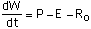 . (1)
When soil moisture exceeds the holding capacity of the active layer, surplus water is treated as groundwater recharge to the underlying aquifer. The root zone may also receive water from the aquifer if the aquifer deepens sufficiently (see GWSW description below).
The SVAT uses the Penman-Monteith scheme [e.g., Dingman, 1994] to calculate evapotranspiration:
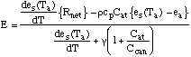 , (2)
where e
s is the saturation vapor pressure, Ta and ea are the temperature and vapor pressure, respectively, of the atmospheric layer adjacent to the ground, and Rnet is the net surface radiation. Other symbols are defined in the Appendix. The atmospheric conductance Cat is computed from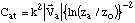 , (3)
where k is the von Karman constant, 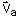 is the horizontal wind in the atmospheric layer adjacent to the ground, z
a is the mid-level of this layer, and zo is surface roughness. The canopy conductance Ccan is given by, (4)
where c
max is a maximum leaf conductance and LAI is the leaf-area index. The G terms are conductance coefficients, each ranging between 0 and 1 and each dependent on a physical property. The leaf-water potential coefficient, GLWP, varies with available soil moisture; the leaf-temperature coefficient, GLEAF, varies with near-surface air temperature; the solar flux coefficient, GSOL, varies with net solar (shortwave) radiation; and the absolute humidity deficit coefficient, GHD, varies with the difference between saturation and actual atmospheric humidity. The functional forms for each G used here follow prescriptions in Dingman [1994] with parameters in GLWP adjusted in part using specifications in Running and Coughlan [1988] and parameters in GHD adjusted on the basis of field-study results reported by Stewart and Verma [1992]. The coefficient GLEAF is further adjusted as part of the model’s calibration. The net effect of the conductance coefficients is to produce a feedback between E and soil-water status.The SVAT includes a canopy that intercepts precipitation, re-evaporates it, and spills water to the surface. In the formulation used here, the canopy intercepts all precipitation, filling a canopy reservoir distinct from the soil-moisture reservoir. Water fills this reservoir to its limit before it can overflow and spill to the ground. Water evaporates from the canopy using (2) without Hdeep and with zero canopy resistance. No evapotranspiration from the soil/vegetation occurs while there is water in the canopy reservoir. The depth of the canopy reservoir is proportional to LAI and is determined as part of the calibration.
The sensible heat flux H and the momentum exchange 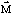 between the surface and the atmosphere are computed using drag laws,
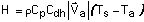 , (5)
and
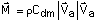 , (6)
where T
s is the surface temperature. The drag coefficients Cdh and Cdm are computed as part of the Louis [1979] and Louis et al. [1981] PBL turbulent dynamics and so are dependent on the temperature structure of the PBL and on the surface roughness parameter. For numerical stability in ATMOS, we compute H using a predictor-corrector scheme.The SVAT advances the surface temperature in time using
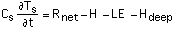 , (7)
where H
deep is a deep-ground heat flux computed using a force-restore method [Deardorff 1978]. Associated with the force-restore method is a deep-ground temperature Tdeep that evolves in time according to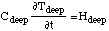 . (8)
Variables and parameters in (7) and (8) are defined in the Appendix. The soil heat capacity, density and thermal diffusivity vary with soil moisture, with details depending on the soil texture of the specific application.
Finally, although the applications of CLASP later in this paper are for a region with generally small amounts of transient snow, the SVAT also includes the snow model of Dickinson et al. (1993) to accumulate and melt snow. So long as snow is falling or present on the surface, its reservoir has priority over the canopy and ground for exchanging water with the atmosphere, through precipitation and sublimation.
(d) GW/SW
Groundwater flow within each terrestrial grid cell accounts for net recharge from the SVAT, time-dependent subsurface flow toward the river (topographic minima), and water exchange between the aquifer and river network. All water flows are potentially bi-directional. The governing transmissivity-based equation for groundwater flow used in the GW/SW module is [Konikow and Bredehoeft, 1974]
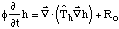 , (9)
where h is water-table elevation and other variables used in (9) are defined in the Appendix. The transmissivity, 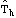, accounts for horizontal variations in soil permeability and aquifer thickness. Recharge across each cell is assumed to be constant over a given time step. Aquifer properties are permitted to vary from cell to cell depending on the model domain's geology. Equation (9) is intended to represent shallow groundwater flow within a phreatic aquifer that is in good hydrologic connection to a river. While this formulation of subsurface water dynamics is idealized, it is able to account for spatial variability of aquifer hydraulic properties as well as capture the gross features of water-table response to changing recharge conditions. These processes can not be represented easily by simpler lumped-parameter formulations of aquifer hydrodynamics [Gelhar and Wilson, 1974].
Equation (9) is solved using a net of nodes (Fig. 2) together with a no-flux boundary condition at the cell's outer edge and a base-flow Q
b-f from the aquifer to the river given by Darcy's Law,, (10)
where 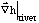 is the hydraulic gradient from the aquifer to the river interface and
DXriver is the length of the cell's river element. The factor of 2 in (10) occurs because the stream is assumed to be situated in the center of each cell; groundwater/stream interactions occur symmetrically on both sides of the river.In headwater cells, most of the flow is toward the river. However, in low-lying reaches, flow from the river into the aquifer can occur. If sufficient flow into the aquifer occurs, the top of the aquifer can encroach into the vegetationUs root zone. When this occurs, the water is transferred from the aquifer to the soil moisture reservoir, and the leaf-water stress coefficient, GLWP, is set to its no-stress value, 1. The aquifer potentially can become so deep that it floods the surface. In this case, computation of river depth to determine downstream water flow includes the flood-water.
River flow is simulated by a set of differential equations representing each discretized river reach. Within each river element
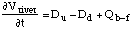 , (11)
where V
river is the volume of water in the river reach, Du is the sum of all upstream discharge inputs, and Dd is discharge outflow. Although Dd defines the downstream flux of water from a particular cell, it also serves as an upstream input in the continuity equation for its adjacent downstream reach. Flow within a cell is represented by Manning’s equation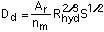 , (12)
where n
m is Manning’s roughness coefficient, Ar is the cross-sectional area of the river, Rhyd is the hydraulic radius, and S is the slope of the energy grade line [Streeter and Wylie, 1979]. River bed geometry can specified from field survey or inferred from geomorphologic principles in different climatic and topographic zones. At each time step, we assume a uniform river height within an element. In using Manning's equation, we assume steady-state discharge over a model time step, and in the model we further assume that the stream-bed elevation may be used to calculate the slope, S.(e) Budget analysis equations
Part of our analysis of model output focuses on the water budgets maintained in the CLASP. Guided by Roads et al. [1994] and references therein, Figure 1 shows the budget equations used for each of the physical domains: ATMOS, SVAT and GW/SW. The equations are spatially averaged over the CLASP's drainage basin.
For ATMOS,
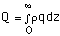 (13)
is the amount of atmospheric water vapor in the column. Also in the atmospheric budget,
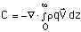 (14)
is the horizontal convergence of atmospheric water vapor into the column. We compute terms for the model's atmospheric water budget by summing over all atmospheric layers. Consistent with discussion in the previous section, condensed atmospheric water is not included in the budget except when it falls out as precipitation. Also in Figure 1, V
a-r is the total water volume in the combined aquifer-river system divided by the basin's area and D is the total discharge from the basin, again divided by its area.4. Calibration and Validation
(a) Observations
We use the set of FIFE observational data from the Konza Prairie Research National Area that was prepared by Betts and Ball [1998] for both calibration (1987 observations) and validation (1988 and 1989 observations). Duan et al. [1996] conclude that FIFE observations in 1987 give a good depiction of the area’s hydrologic cycle. Betts and Ball [1998] express some caution, especially for 1988, when the observations do not close the area’s water budget very well. Although there is some forest in the region at lower elevations along rivers, the observations occur in grassland. In this data set, all available FIFE observations of a field such as surface latent heat flux are averaged together at 30-minute intervals. The averaging makes no distinction between instruments, nor does it use any differential weighting such as area-weighting.
Betts and Ball also give the standard deviation of the reported values at each time step as well as the number of instruments contributing to the average. For most days used, there are typically several instruments reporting values. There are a number of reasons for the range of values among the measurements. Some are due to spatially varying cloud cover [Smith et al., 1992] and physical features of the landscape, such as a site’s terrain-slope orientation [Nie et al., 1992a], specific vegetation characteristics (burned/unburned and grazed/ungrazed grassland)[Simth et al., 1992]. Instrumentation differences enter; surface latent heat flux measurements were made by both eddy-correlation and Bowen ratio instruments, giving slightly different results [Nie et al., 1992b] . Finally, differences were also caused by measurement error [Kanemasu et al., 1992].
We have used the standard deviation among concurrent measurements to give a metric for how accurately surface fluxes have been measured. Thus, our plots of FIFE observations versus time typically show two curves, the instrument average plus/minus the standard deviation. We almost always apply a multi-day running average to flux figures to remove daily fluctuations and highlight climatological behavior. In this instance, we apply the running average to the variance among concurrent measurements.
The primary calibration targets from the FIFE data set are elements of the hydrologic cycle: surface latent heat flux, precipitation and cloud cover. Surface sensible heat flux, near-surface temperature, heat flux into the ground and surface radiation were also included in model-observations comparisons, though they were not specifically targeted for calibration.
(b) Initial and boundary conditions
Consistent with our reference observations, we assume that the CLASP is simulating a pure grassland in the central United States at (39 N, 96.5 W) with leaf-area index, surface roughness, and surface albedo given in Table 1. The soil is assumed to be a form of silty-clayey loam [NSSC, 1998; Famiglietti et al., 1992]. On this basis, we specify soil density, heat capacity and thermal diffusivity as functions of soil moisture (Table 2) by averaging values given by Garratt [1992] for in clay and sand. We use linear interpolation to specify these properties at soil moistures intermediate to those given in Table 2.
Atmospheric forcing for these simulations is prescribed using output from the operational forecast and data assimilation system for the Nested Grid Model (NGM) of the U.S. National Centers for Environmental Prediction (NCEP). The NGM analyses give temperature, wind and moisture fields every 50 mb (5
.103 Pa) in the lower atmosphere, which is relatively high resolution compared to some other readily available operational analyses of the atmosphere. Since we are focusing on the hydrologic cycle, higher resolution near the surface, where absolute amounts of water vapor are largest, is desirable. We use analysis output from the four NGM gridpoints surrounding this location to compute the horizontal boundary conditions for the model.The NGM analysis gives the state of the atmosphere at 00, 06, 12, and 18 UTC. Although there are few upper-air observations available at 06 and 18 UTC, we have found that using analyses for this times is important for the water balance because the 06 UTC analysis will give a depiction of the nocturnal low-level jet, a strong air flow from the Gulf of Mexico into the central U.S. that is important for the region’s hydrologic cycle [Stensrud, 1996]
We have also found that the atmospheric relative humidity in the NGM analyses for this region tends to be low when compared to atmospheric soundings at nearby sites (Fig. 3) . This deficiency appears to be fairly constant throughout the year, with the observations on average having 12% larger specific humidity. As a consequence, for the simulations here, we have increased NGM atmospheric humidity by 12% on input, subject to the restriction that input relative humidity does not exceed 100%.
(c) Calibration
For the calibration simulations, we use NGM analyses from a three-year period 1 January 1985 — 31 December 1987 to drive the CLASP. In order to arrive at appropriate initial conditions, we cycle through these three years repeatedly until soil moisture changes by less than 1% from the start of one cycle to the next. Aquifer water evolves more slowly than soil moisture, but the focus of calibration is surface-atmosphere coupling contained in the FIFE observations. To simplify this stage of the computation, we allow water to spill from the soil to the aquifer but do not permit any aquifer enchroachment into the root zone and ignore the fate of water once it enters the aquifer. This assumption appears reasonable for the FIFE observations, which have very few valley bottom sites [Smith et al., 1992] and not likely to receive significant soil moisture replenishment from river-aquifer coupling to the root zone.
The years 1985 — 1987 do not show any extreme climatic behavior in atmospheric driving data, so we assume that the state to which the model evolves during spin-up is a representative initial condition. Prior to spin-up, initial coarse calibration was performed through a sequence of 80-day sensitivity simulations spanning 1 July — 8 September 1987. The model was then spun-up to create an initial state assumed to apply to 1 January 1985. Final calibration was performed by running the model from 1 January 1985 through 31 December 1987, using the spun-up state as initial condition for soil and atmospheric water.
Four aspects of model construction emerged as important calibration factors: effective relative humidity to initiate stable (large-scale) condensation, effective length of the growing season, amount of available soil water, and cloud cover parameterization.
(c.1) Precipitation
To initiate condensation, the model’s original treatment was to allow water condensation when relative humidity exceeded 100% at the end of a time step. This resulted in deficient precipitation. Many models (find examples [AMIP?] or modify this statement) use a simple assumption that the effective saturation relative humidity, RHeff , is less than 100% . The reasoning is that spatial variability in humidity may cause parts of a layer in a gridbox to become saturated even when gridbox-average relative humidity is less than 100%. However, using RHeff < 100% essentially a correction for bias in the model. The relatively coarse grid of the driving analysis (165 km x 165 km) compared to the FIFE domain (approximately 15 km x 15 km) may be one source of bias because atmospheric convergence will be smoothed somewhat on the coarser grid, resulting in less intense moisture convergence. In addition, atmospheric mass convergence will be less intense, resulting in weaker vertical motion and thus less vertical moisture advection.
Some additional adjustment was made to the convection scheme, where the fraction of precipitation falling outside the convective cloud, CP, may be adjusted (Emanuel, private communication). The parameter CP was reduced to one sixth its original value. This also yeilded an small increase in precipitation. In addition, this adjustment retained an approximately even split between stratiform and oonvective precipitation. While real world precipitation is obviously much more complex than a simple split between two types of precipitation, this partitioning is similar to typical behavior of mesoscale models over the U.S. (e.g., Pan et al. [1998]). Adopted values for RHeff and CP appear in Table 3.
(c.2) cloud cover
The primary adjustment of the cloud cover parameterization was to adjust the dependence of stratiform cloud cover on relative humidity to be consistent with the onset of stratiform precipitation. Thus, stratiform cloud cover is 100% when relative humidity = RHeff.
(c.3) Available soil moisture
The model’s original prescription for grassland rooting depth (RD) was 1.25 m, with the maximum available water capacity equal to 13% of RD, or 0.162 m. For the period 28 May — 15 October 1987, when both evapotranspiration E and precipitation P measurements were made, the amount of water lost from the soil was at least (E-P) = 0.185 m, so the original water capacity of the soil was too small versus observations. We adjusted both the rooting depth and maximum available water fraction (AWF) to help give adequate surface latent heat flux. Final values of these parameters appear in Table 3.
(c.4) Effective growing season
One of the conductance coefficients in (4), Gleaf, depends on the near-surface air temperature:
, (15)
where originally Too = 0. We have used this function to control green-up and senescence in the model. In the original Gleaf formula, substantial evapotranspiration could occur in spring as temperatures warmed above freezing. Although FIFE surface evapotranspiration observations in 1987 begin only on DATE, model behavior suggested that simulated E was too large in spring, resulting in a soil moisture deficit and weak evaportanspiration later in the summer. We delayed the onset of substantial evapotranspiration in the model by shifting the Gleaf formula toward higher temperatures. Final values were chosen to give adequate surface latent heat flux in mid-summer and appear in Table 3.
(c.5) Canopy reservoir
The canopy reservoir depth is proportional to LAI. We set the reservoir depth to (0.1 mm 4 LAI). The depth/LAI ratio was calibrated to be between two extremes: having a relatively deep reservoir that allows too little water to reach the ground and having a canopy reservoir of negligible depth and, hence, negligible influence. For ratios of 0.1 mm/LAI and smaller, approximately 85% of water from modest to intense storms (precipitation > 10 mm/day) fell through to the surface, consistent with results reported in Dingman (1994), though here the vegetation is prairie grass. Larger ratios yielded much less fall through. The adopted ratio is also the same as used by Bonan (19__) in his detailed SVAT.
(c.6) Calibrated model
Comparisons of the calibrated model versus FIFE observations appear in Figures 4 - 10 and Table 4. Surface latent heat flux from FIFE observations and the calibrated CLASP appear in Fig. 4. The CLASP time evolution falls approximately in the middle of the two FIFE curves and thus reproduces surface latent heat flux during the 1987 period of observations quite well. The bias and temporal standard deviation between the CLASP and FIFE observations (after 31-day running average) are relatively small.
The comparison of observed and simulated precipitation (Fig. 5) shows daily values and thus does not use a running average to smooth time series curves, in order to distinguish frequency of occurrence from daily magnitude. Note that figure shows observed precipitation multiplied by —1 to separate the two curves. The model reproduces the frequency of rainfall events fairly well. Although the model tends to produce more precipitation on the days with greater observed precipitation, it does not reproduce the most intense daily values. This is not surprising, as the analysis providing the model’s boundary conditions has a grid spacing (~ 165 km) that is much coarser than the roughly 15 km width and breadth of the FIFE observation domain. As a consequence the external forcing of precipitation events will be spatially smoothed, and thus somewhat muted, compared to that experienced by the actual atmosphere in the FIFE domain. The bias in CLASP precipitation rate versus FIFE observations is relatively small. The temporal standard deviation between the two is somewhat larger, although smaller than the temporal standard deviation (8.2 mm/d) of the daily observations versus no precipitation.
Daily cloud cover fluctuates rapidly in the observations and the model (Fig. 6), the model generally matching the observations well over most of the period. We do not subject the cloud-cover time series to a running average because of a data gap from day 239 to 257 that considerably reduces the time span allowing averaging.
Other simulated surface energy fluxes (sensible heat, incident solar radiation, downward infrared radiation, heat into the soil) generally compare well will observations. Surface sensible heat flux has acceptable values during the observing period ( Fig. 7) with small bias and standard deviation versus observations (Table 4), although it does not capture a slow, monthly variability seen in the observations. Incident solar radiation at the surface agrees well with FIFE observations ( Fig. 8) except at the end of the year, when it is larger. For both the observations and the simulation, the envelope of daily values (not shown) gradually declines toward the end of the year, and the model’s envelope is nearly coincident with the observation’s. However, over the last 30 days of the year, the simulated daily values tend to lie closer to the envelope than do the observations. This indicates that the model's cloud cover is deficient during this period. The FIFE cloud cover data set unfortunately terminates before this point, preventing a cloud-cover comparison. The simulated infrared radiation from the atmosphere to the surface also compares well with FIFE observations ( Fig. 9). The deleted from the comparison are the last 30 days of the year, when observations become sporadic. Finally, the model's simulation of energy flux into the soil ( Fig. 10 ) agrees well with the FIFE observations except at the end of the observation period, when the model simulates more energy leaving the soil than given by the observations.
(d) Validation
For CLASP validation, we continued the run of the fully calibrated model through 1988 and 1989. The next set of figures were constructed in the same manner as the calibrations figures: FIFE observations are presented as the instrument average given by Betts and Ball (1998) plus or minus the standard deviation of the instrument average. In addition, Tables 5a and 5b give biases and standard deviations of CLASP output from FIFE observations for the periods that the observations are available.
For surface latent heat flux ( Fig. 11), CLASP values are relatively low compared to FIFE observations in 1988 but are close to FIFE observations in 1989. Betts and Ball (1998) note that FIFE observations for the region's water budget do not balance. The imbalance is worse for 1988 than 1987. In addition, even though the FIFE region experienced drought in 1988, the 1988 surface latent heat flux observations are close in magnitude to the 1987 observations. These features of the observation suggest some caution in using them to assess model. Nonetheless, the FIFE data represents a consensus of measurements by instruments in the field, and the model is deficient versus these observations in 1988. However, any deficiency in the 1988 simulation is not permanent, as the model reproduces the 1989 simulations well.
Precipitation simulation for 1988 and 1989 ( Fig. 12 ) reproduces features of the 1987 FIFE-CLASP comparison: the model tends to capture the frequency of wet and dry periods well, but has more difficulty matching the observed magnitude, especially for intense rain events. CLASP bias versus FIFE is acceptable in 1988 (Table 5a)., but is rather large in 1989 (Table 5b). Much of the bias in 1989 is due to very intense precipitation events that the model does not capture. The model's inability to capture this relatively extreme event further underscores the difficulty of reproducing observed precipitation for a relatively small area compared to the resolution of the driving fields.
Cloud cover observations were not available from the Betts and Ball (1998) dataset for 1988 and 1989. Surface fluxes of incident solar radiation (Fig. 13) indicate that the model produces reasonably good cloud cover with bias toward less cloud cover than actually occurred in 1988. Other energy fluxes at the surface (sensible heat flux, downward infrared radiation, heat flux into the soil) compare acceptably well (Figs. 14,15, 16), except that the CLASP sensible heat flux tends to be too large in 1988, consistent with its latent heat flux tending to be too small. As with the latent heat flux, the surface sensible heat flux returns to values similar to the FIFE observations in 1989.
Overall, CLASP does a reasonably good job of simulating climatic behavior of water and energy cycles for the two-year validation period when judged against FIFE observations. Two years after the calibration period, there do not appear to be any persistent trends in the model that cause permanent bias versus observations. Indeed, the model’s surface sensible and latent heat fluxes appear to recover well in 1989 from whatever bias they had in 1988.
5. Demonstration Simulation: Horizontal Coupling of the Land-Atmosphere Water Cycle through River Flow
(a) Model configuration and boundary conditions
We present here a demonstration of model utility for examining issues of coupled land-atmosphere water cycles, by performing a suite of simulations to study effects of horizontal river-water flow on the region’s hydrologic cycle. For these simulations, we again locate CLASP over the FIFE site and tile the surface of an 80 km x 80 km simulation domain with 1600 cells that resolve the region’s surface topography and river network at 2 km resolution (FIG). River widths were specified in an idealized manner according to the elevation of the cell ( FIG ##), with river segments being widest in lowest lying areas. Although this region in reality receives upstream river discharge from the Kansas River, here we ignore any such boundary input in order to focus on the effects of horizontal redistribution of river flow generated within the simulation domain. In order to focus on the effects of redistribution of the water by the river network, we again assume the domain’s vegetation is purely grass and do not include forested areas that appear in the region, particularly in some of the river valleys.
Some of the simulation performed here includes two-way coupling between root-zone soil moisture, the subterranean aquifer and river water, so additional preliminary simulation was necessary to spin-up the aquifer. In order to arrive at appropriate initial conditions, we again cycle through the years 1985-1987 repeatedly until the most slowly evolving water reservoir, the subterranean aquifer, changes by less than 2% in water amount from the start of one cycle to the next. During this cycle, the change in the aquiferUs water storage, dVa-r/dt (Fig. 1), was a factor of 10 smaller than time-average runoff generation. Further simulations from the spun-up state span the period 1 January 1985 — 31 December 1993, using NGM analyses for atmospheric boundary conditions.
Results are given here for two principal simulations: one in which encroachment of aquifer water into the root zone is allowed and one in which it is not. For the former, water entering the river network potentially can re-enter the aquifer reservoir downstream and even return to the vegetation root zone if there is sufficient river head. Water draining from upstream root zones can thus become available again for evapotranspiration through horizontal redistribution in the river network. The simulation period includes episodes of drought, flood and otherwise average hydrologic behavior, allowing us to examine the influence of horizontal redistribution under a variety of conditions. This study is a preliminary investigation of the impact of such redistribution on the region’s water cycle, using the relatively simple SVAT and GWSW modules of the initial CLASP.
(b) Results
Figure ## shows the time evolution of net runoff from the subterranean aquifers for the simulations with and without groundwater encroachment. Net runoff here is the water flowing from the aquifers into the river network in some cells minus water flowing from the river network into the aquifers in others. For the simulation with no encroachment, there is a substantial increase in runoff during winter in most years, which is a response to aquifers recharging when evapotranspiration is small. Four winters (1987-88 through 1990-91) show no increase because winter precipitation is relatively low compared to the other winters and because the model’s 1988 drought depletes soil moisture so much that the soil reservoir can not increase sufficiently in winter to generate aquifer recharge. During this period, the no encroachment runoff displays persistent draining of the aquifers with an approximately exponential decay.
When encroachment is included, net runoff displays more rapid evolution with a substantial decrease going from winter to summer. This occurs because water flowing into the aquifers can now enter the soil root zone and subsequently evaporate or transpire into the atmosphere. Although water can enter the root zone any time of the year, the effect on net runoff is greatest in summer when evapotranspiration is strongest. In winter, when evapotranspiration tends to vanish, net runoff is approximately the same in either simulation because there is no substantial loss of water from the aquifers through the root zone to the atmosphere. Thus the runoff evolution in the simulation with encroachment has the gradual runoff decay seen in the no-encroachment, but with a superimposed annual cycle variation.
As suggested by net runoff, evapotranspiration differences between the two simulations (Fig. ##) are largest in summer. In nearly all years, encroachment yields a late-summer increase in the domain's evapotranspiration (surface latent heat flux). At the same time, surface sensible heat flux decreases by about the same amount, so that the net energy loss from the surface by these two fluxes remains about the same, whether or not encroachment is included. Changes in the ratio of latent to sensible heat flux (Bowen ratio) could potentially alter atmospheric processes such as deep convection, but no systematic change in precipitation occurred between these two simulations.
Differences evapotranspiration are smallest in the years 1992 and 1993, which were marked by relatively large amounts of rain in the simulations (not shown) and, of course, by flood conditions in the real world. The effect of encroachment should be smallest in wet years because the soil will already be very wet over the domain. Thus, evapotranspiration will not be inhibited by a soil-water stress that aquifer water can alleviate through encroachment. The differences are largest during the drought year (1988), when encroachment yields a 15-20% increase in running-average evapotranspiration over most of the summer, with the increase exceeding 50% at times. For 1988, horizontal transport of water by the river network provides water at lower elevations to the aquifers and root zones, allowing additional evapotranspiration and thus altering the land-atmosphere hydrologic cycle.
The year 1989 is also relatively dry, as indicated by Fig. ##-ET fig., but encroachment has relatively small effect. The continued drainage of the aquifer (Fig. ##-runoff) by runoff reduces the amount of water that can flow back to the root zone at lower elevations and be available for evapotranspiration. For part of 1989, evapotranspiration in the simulation with encroachment is actually smaller than in the simulation without encroachment. Similar behavior at smaller magnitude occurs in other years as well. The reason for the reduced evapotranspiration is presently not understood.
6. Discussion
We have presented a model designed to study the coupled land-atmosphere hydrologic cycle, following water through a wide spectrum of transformations from its inflow into a region by horizontal, atmospheric transport through surface-atmosphere exchange processes and aquifer recharge to outflow as river discharge. The model is intended to help improve our capability to simulate the global-scale hydrologic cycle and so is designed to emulate a gridbox of an atmospheric general circulation model. Land processes, however, are simulated at finer resolution. The model thus forms a testbed for developing continental-scale simulation of the land-atmosphere hydrologic cycle. Because the model aims at assisting our understanding of macro-scale hydrologic processes in climate simulation, its component parts in this initial formulation are relatively simple to aid interpretation of model behavior. However, because the model is designed to be a testbed for hydrologic simulation, it has also been designed to allow relatively straightforward implementation of alternative numerical models of component processes.
Simulations with and without aquifer coupling to the vegetation root zone demonstrate the potential for horizontal water flow to affect area-averaged evapotranspiration, through transfer of river water into adjacent aquifers that can encroach the root zone in low-lying areas. For the case examined here, later summer evapotranspiration can increase by over 50% due to horizontal water flow.
Acknowledgments
This research was supported by the U.S. Department of Energy under grant DE-FG02-92ER6147. Additional computational support came from the National Science Foundation's Earth Sciences Instrumentation and Facilities Program under grant EAR-94-04873. Support from the Gibson Hydrogeology Endowment and the McKnight Land Grant Professorship Program at the University of Minnesota are also gratefully acknowledged. We thank C. Winkler, C. do Espirito Santo, S. Karakoy, S. Kiehne, B. Lebeck, P. Morin, P. Nendick, and D. Slawinski for assistance with programming and graphics. We also thank J.-F. Louis, K.-N. Liou and K. Emanuel for providing code that was adapted for constructing CLASP.
Appendix - Symbol Definitions
A
r river cross-sectional areaC horizontal convergence of atmospheric water transport
C
at atmospheric conductanceC
can canopy conductanceC
dh surface drag coefficient for sensible heatC
dm " " " for momentumC
p specific heat of air, at constant pressureC
s soil (root zone) heat capacityC
deep deep-soil heat capacityD net river discharge from model domain
D
at contribution to atmospheric water budget by damping termD
d downstream discharge from a river reachD
u upstream discharge into a river reachE evapotranspiration
F
u,Fv,Fq,Fq ATMOS physical processes computed from parameterizationsG
HD conductance coefficient for absolute humidity deficitG
LEAF " " " leaf temperatureG
LWP " " " leaf-water potentialG
SOL " " " net solar radiationH surface sensible heat flux
H
deep deep-soil heat fluxL latent heat of vaporization
LAI leaf-area index
P precipitation
Q atmospheric precipitable water
Q
river aquifer's base flowR gas constant for air
R
hyd hydraulic radius of riverR
net net radiative flux at the surfaceR
o groundwater rechargeR
p rainfall directly onto a riverS slope of the river's energy grade line
T atmospheric temperature
T
a temperature of the lowest atmospheric layerT
s soil-surface temperatureT
deep deep-soil temperaturetransmissivity for groundwater flow
V
a-r volume of water in combined aquifer-river networkV
river volume of water in a river elementhorizontal wind
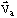 horizontal wind in the lowest atmospheric layer
W total soil moisture
W
avail available soil moistureDXriver length of a surface cell's river element
c
max maximum leaf conductancec
p heat capacity of air at constant pressuree
a vapor pressure of the lowest atmospheric layere
s saturation vapor pressuref Coriolis parameter, = 2
Wsin(latitude)g gravitational acceleration
h water-table elevation
h
river depth of riverk von Karman constant
n
m Manning's roughness coefficientp air pressure
q atmospheric water-vapor specific humidity
t time
u west-east component of
v south-north component of
w vertical wind
w
river width of riverx west-east coordinate
y south-north coordinate
z vertical coordinate
z
a mid-level of the lowest atmospheric layerz
o surface roughnessW rotation rate of the Earth
g psychrometric constant
q atmospheric potential temperature
k R/Cp
r air density
f soil porosity
References
Avissar, R., and R. A. Pielke, A parameterization of heterogeneous land surfaces for atmospheric numerical models and its impact on regional meteorology, Mon. Wea. Rev., 117, 2113-2136, 1989.
Avissar, R., Conceptual aspects of a statistical-dynamical approach to represent large-scale heterogeneities in atmospheric models, Wat. Resour. Res., 97, 2729-2742, 1992.
Avissar, R., Observations of leaf stomatal conductance at the canopy scale: An atmospheric modeling perspective, Boundary-Layer Meteor., 64, 127-148, 1993.
Becker, A., and J. Nemec, Macroscale hydrological models in support of climate research, in The Influence of Climate Change and Climate Variability on the Hydrologic Regime and Water Resources, pp. 431-445, IAHS Press, Wallingford, U. K., 1987.
Fill in: Betts and Ball (1998)
Not used now? >>> Bonan, G.B., D. Pollard, and S.L. Thompson, Influence of subgrid-scale heterogeneity in leaf area index, stomatal resistance and soil moisture on grid-scale land-atmosphere interactions, J. Climate, 6 (10), 1882-1897, 1993.
Committee on Global Change (U. S. National Committee for the IGBP), Research Strategies for the U.S. Global Change Research Program., National Academy Press, Washington, 1990.
Deardorff, J. W., Efficient prediction of ground surface temperature and moisture with inclusion of a layer of vegetation, J. Geophys. Res., 83, 1889-1903, 1978.
Dickinson, R. E., A. Henderson-Sellers, and P. J. Kennedy, Biosphere-Atmosphere Transfer Scheme (BATS) Version 1e as Coupled to the NCAR Community Climate Model, NCAR Technical Note NCAR/TN-387+STR, 72 pp., National Center for Atmospheric Research, Boulder, 1993.
Dingman, S. L., Physical Hydrology, 575 pp, Macmillan College Publishing Company, New York, 1994.
Fill in: Duan et al. (1996)
Eagleson, P. S., The emergence of global-scale hydrology, Wat. Resour. Res., 22, 6S-14S, 1986.
Emanuel, K. A., A scheme for representing cumulus convection in large-scale models, J. Atmos. Sci., 48, 2313-2335, 1991.
Entekhabi, D., and P. S. Eagleson, Land-surface hydrology parameterization for atmospheric general circulation models including subgrid cell spatial variability, J. Climate, 2, 816-831, 1989.
Famiglietti, J. S., and E. F. Wood, Evapotranspiration and runoff from large land areas: Land surface hydrology for atmospheric general circulation models, in Climate Models: Observations, Models, and Analyses, edited by E. F. Wood, pp. 179-204, Kluwer, The Hague, 1991.
Fill in: Garratt textbook
Gelhar, L.W., and J.L. Wilson, Ground-water quality modeling, Ground Water, 12 , 399-408, 1974.
Gutowski et al. 1998 — Het SST paper.
Hostetler, S. W., and F. Giorgi, Use of output from high resolution atmospheric models in landscape-scale hydrological models, Wat. Resour. Res., 29, 1685-1695, 1993.
IGBP-BAHC, Biospheric Aspects of the Hydrological Cycle (BAHC): The Operational Plan. Core Project Document, IGBP, Stockholm, pp., 1993.
Jarvis, P. G., G. B. James and J. J. Landsberg, Coniferous Forest, in Vegetation and the Atmosphere, edited by J. L. Monteith, pp. 171-240, Academic Press, New York, 1976.
Kalnay, E., M. Kanamitsu, J. Pfaendtner, J. Sela, M. Suarez, J. Stackpole, J. Tuccillo, L. Umscheid and D. Williamson, Rules for the interchange of physical parameterizations, Bull. Amer. Meteor. Soc., 70, 620-622, 1989.
Kanemasu, E.T., S.B. Verma, E.A. Smith, L.J. Fritschen, M. Wesley, R.T. Field, W.P. Kustas, H. Weaver, J.B. Stewart, R. Gurney, G. Panin, and J.B. Moncrieff, Surface flux measurements in FIFE: An overview, J. Geophys. Res., 97 (D17), 18, 547-18,555, 1992.
Konikow, L.F., and J.D. Bredehoeft, Modeling flow and chemical quality changes in an irrigated stream-aquifer system, Wat. Resour. Res., 10 (3), 546-562, 1974.
Li, B., and R. Avissar, The impact of spatial variability of land-surface characteristics on land-surface heat fluxes, J. Climate, 7 (4), 527-537, 1994.
Liou, K.-N., and S. C. Ou, Parameterization of infrared radiative transfer in cloudy atmospheres, J. Atmos. Sci., 38, 2707-2716, 1981.
Liou, K.-N., and S. C. Ou, Theory of equilibrium temperature in radiative-turbulent atmospheres, J. Atmos. Sci., 40, 214-229, 1983.
Liou, K.-N., and Q. Zheng, A numerical experiment on the interactions of radiation, clouds and dynamic processes in a general circulation model, J. Atmos. Sci., 41, 1513-1535, 1984.
Logaiciga, H.A., J.B. Valdes, R. Vogel, J. Garvey, and H. Schwarz, Global warming and the hydrological cycle, J. Hydrology, 174, 83-127, 1996.
Lorenz, E. N., The Nature and Theory of the General Circulation of the Atmosphere., 161 pp, World Meteorological Organization, 1967.
Louis, J.-F., A parametric model of vertical eddy fluxes in the atmosphere, Boundary -Layer Meteor., 17, 187-202, 1979.
Louis, J.-F., M. Tiedtke and J.-F. Geleyn, A short history of the operational PBL parameterization at ECMWF, Proceedings, ECMWF Workshop on PBL Parameterization, pp. 59-79, ECMWF, Reading, U. K., 1981.
Nie, D., T. Demetriades-Shah, and E.T. Kanemasu, Surface energy fluxes on four slope sites during FIFE 1988, J. Geophys. Res, 97 (D17), 18,641-18,649, 1992a.
Nie, D., E.T. Kanemasu, L.J. Fritschen, H.L. Weaver, E.A. Smith, S.B. Verma, R.T. Field, W.P. Kustas., and J.B. Stewart, An intercomparison of surface energy flux measurement systems used during FIFE 1987, J. Geophys. Res, 97 (D17), 18,715-18,724, 1992b.
Peterson, D. L., M. A. Spanner, S. W. Running and K. B. Teuber, Relationship of thematic mapper simulator data to leaf area index of temperate coniferous forests, Remote Sens. Environ., 22, 323-341, 1987.
Phillips, T. J., Documentation of the AMIP Models on the World Wide Web, PCMDI Report 24, 14 pp., Lawrence Livermore National Laboratory, Livermore, CA, 1995. [http://www-pcmdi.llnl.gov/phillips/modldoc/amip/amip.html]
Pitman, A. J., A new parameterization of the land surface for use in general circulation models, Ph. D. thesis, University of Liverpool, 481 pp, 1988.
Press, W. H., S. A. Teukolsky, W. T. Vetterling and B. P. Flannery, Numerical Recipes in FORTRAN. The Art of Scientific Computing, 966 pp, Cambridge University Press, Cambridge, 1992.
Ramanathan, V., The role of ocean-atmosphere interactions in the CO2 climate problem. J. Atmos. Sci., 38, 918-930, 1981.
Roads, J. O., S.-C. Chen, A. K. Guetter and K. P. Georgakakos, Large-scale aspects of the United States hydrologic cycle, Bull. Amer. Meteor. Soc., 75, 1589-1610, 1994.
Running, S. W., D. L. Peterson, M. A. Spanner and K. B. Teuber, Remote sensing of a coniferous forest leaf area, Ecology, 67, 273-276, 1986.
Running, S. W., and J. C. Coughlan, A general model of forest ecosystem processes for regional applications I. Hydrologic balance, canopy gas exchange, and primary production processes, Ecological Modelling, 42, 125-154, 1988.
Running, S. W., R. R. Nemani, D. L. Peterson, L. E. Band, D. F. Potts, L. L. Pierce and M. A. Spanner, Mapping regional forest evapotranspiration and photosynthesis by coupling satellite data with ecosystem simulation, Ecology, 70, 1090-1101, 1989.
Sellers, P.J., F.G. Hall, G. Asrar, D.E. Strebel, and R.E. Murphy, An overview of the First International Satellite Land Surface Climatology Project (ISLSCP) Field Experiment (FIFE), Journal of Geophysical Research, 97 (D17), 18,345-18,371, 1992.
Sellers, P. J., D. A. Randall, G. J. Collatz, J. A. Berry, C. B. Field, D. A. Dazlich, C. Zhang, G. D. Collelo and L. Bounqua, A revised land surface parameterization (SiB2) for atmospheric GCMs. Part I: Model formulation, J. Climate, 9, 676-705, 1996.
Shuttleworth, W. J., Macrohydrology - the new challenge for process hydrology, J. Hydrology, 100, 31-56, 1988.
Slingo, J. M., The development and verification of a cloud prediction scheme for the ECMWF model, Quart. J. Roy. Meteor. Soc., 113, 899-927, 1987.
Fill in: Smith et al., ___, _____1992 (FIFE)
Spanner, M. A., L. L. Pierce, S. W. Running and D. L. Peterson, The seasonality of AVHRR data of temperate coniferous forests: Relationship with leaf area index, Remote Sens. Environ., 33, 97-112, 1990.
Fill in: Stensrud, ___, _____1996
Stewart, J. B., and S. B. Verma, Comparison of surface fluxes and conductances at two contrasting sites within the FIFE area, J. Geophys. Res., 97, 18,623-18,628, 1992.
Streeter, V. L., and E. B. Wylie, Fluid Mechanics, 562 pp., McGraw-Hill, New York, 1979.
Vorosmarty, C. J., A. Grace, B. J. Peterson, E. B. Rastetter and J. Melillo, Distributed parameter models to analyze the impact of a human disturbance on the surface hydrology of a large tropical drainage basin in southern Africa, in Hydrology for the Water Management of Large River Basins, edited by F. H. M. v. d. Ven, D. Gutnecht, D. P. Loucks, and K. A. Salewicz, pp. 233-245, IAHS Press, Wallingford, U. K., 1991.
Vorosmarty, C. J., W. J. Gutowski, M. Person, T.-C. Chen and D. Case, Linked atmosphere-hydrology models at the macroscale. Macroscale Modelling of the Hydrosphere, edited by W. B. Wilkinson, pp. 3-27, IAHS Press, Wallingford, U. K., 1993.
Figure Captions
1. Clasp schematic plus water-budget equations. See Section 3(e) for an explanation
of these equations.
2. Schematic illustrating different components of the GWSW domain and the
numerical grid used to simulate groundwater flow.
3. 950 mb specific humidity (q) during 1987 from NGM analyses (39.5 N, 95.2 W)
and nearby observations at Topeka, KS (39.1 N, 95.6 W). Data have been
subjected to a 31-day running average.
{kind=link}
{kind=link}
{kind=link}
{kind=link}
{kind=link}
{kind=link}
{kind=link}
{kind=link}
{kind=link}
{kind=link}
{kind=link}
{kind=link}
{kind=link}
{kind=link}
{kind=link}